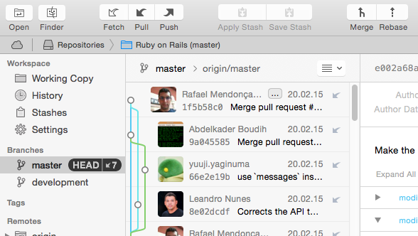
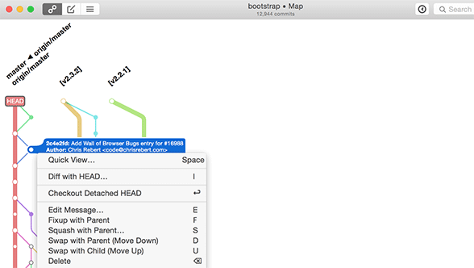

git 工具¶
工具¶
GitHub Desktop¶

Platforms: Windows, Mac
Price: Free
Tower¶

Platforms: Windows, Mac
Price: $79/user (Free 30 day trial)
GitX-dev¶
Platforms: Mac
Price: Free
Gitbox¶

Platforms: Windows, Mac
Price: $14.99
SourceTree¶

Platforms: Windows
Price: Free
Git Extensions ¶

Platforms: Windows, Mac
Price: Free
SmartGit¶

Platforms: Windows, Mac, Linux
Price: $79/user / Free for non-commercial use
git-cola¶

Platforms: Windows, Mac, Linux
Price: Free
GitUp¶

Platforms: Mac
Price: Free
GitEye¶

Platforms: Windows, Mac, Linux
Price: Free
giggle¶
Platforms: linux
Price: Free
gitg¶

Platforms: Linux
Price: Free
GitKraken¶

Platforms: Windows, Mac, Linux
Price: Free
Aurees¶

Platforms: Windows
Price: $69.99/user / Free for non-commercial use
Fork¶

Platforms: Mac
Price: Free
Windows¶
Mac¶
Linux¶
gitk¶
gitk 是一个历史记录的图形化查看器。 你可以把它当作是基于 git log 和 git grep 命令的一个强大的图形操作界面。 当你需要查找过去发生的某次记录，或是可视化查看项目历史的时候，你将会用到这个工具。
GitStats¶
GitStats 是一个git仓库状态分析工具,代码行数,提交者各自贡献信息
ubuntu合并对比工具¶
#安装meld
sudo apt-get install meld
编辑~/.gitconfig
[difftool] prompt = false [mergetool] prompt = false [diff] tool = meld [merge] tool = meld
使用
git difftool 文件名 git megretool
插件¶
Eclipse EGit¶
http://blog.csdn.net/luckarecs/article/details/7427605

https://git.wiki.kernel.org/index.php/Interfaces,_frontends,_and_tools#Graphical_Interfaces